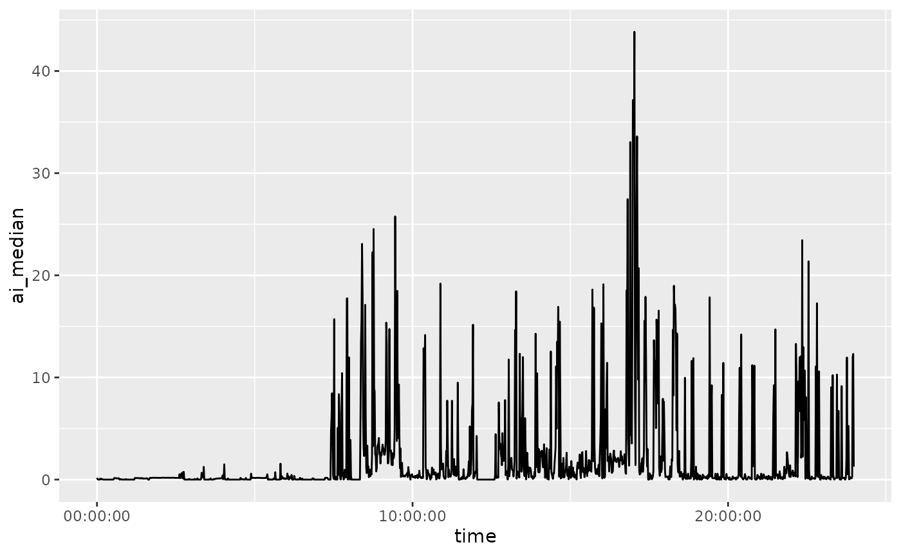

Summarizing Actigraphy Data
Source:vignettes/Summarizing_Actigraphy_Data.Rmd
Summarizing_Actigraphy_Data.RmdData
The data is from https://github.com/THLfi/read.gt3x/files/3522749/GT3X%2B.01.day.gt3x.zip. It is a daily GT3X file from an ActiGraph.
Let’s download the data:
url = "https://github.com/THLfi/read.gt3x/files/3522749/GT3X%2B.01.day.gt3x.zip"
destfile = tempfile(fileext = ".zip")
dl = utils::download.file(url, destfile = destfile)
gt3x_file = utils::unzip(destfile, exdir = tempdir())
gt3x_file = gt3x_file[!grepl("__MACOSX", gt3x_file)]
path = gt3x_fileThis data represents sub-second level accelerations in the X, Y, and
Z directions. Additional information from devices can be measured, such
as temperature or light. We will focus only on the accelerometry data.
The GGIR::g.calibrate function is a method to calibrate the
ENMO values (van Hees et al. 2014). Other
types of activity data, would be things such as activity counts, step
counts, or previously summarized data. Data such as this is commonly
calculated using proprietary methods or algorithms.
Create a Data Matrix
We will use the read_actigraphy function to read these
files into an AccData object:
x = read_actigraphy(path)
Input is a .gt3x file, unzipping to a temporary location first...
Unzipping gt3x data to /tmp/RtmpOIeXsn
1/1
Unzipping /tmp/RtmpOIeXsn/GT3X+ (01 day).gt3x
=== info.txt, activity.bin, lux.bin extracted to /tmp/RtmpOIeXsn/GT3X+(01day)
GT3X information
$ Serial Number :"NEO1DXXXXXXXX"
$ Device Type :"GT3XPlus"
$ Firmware :"2.5.0"
$ Battery Voltage :"4.22"
$ Sample Rate :30
$ Start Date : POSIXct, format: "2012-06-27 10:54:00"
$ Stop Date : POSIXct, format: "2012-06-28 11:54:00"
$ Download Date : POSIXct, format: "2012-06-28 16:25:52"
$ Board Revision :"4"
$ Unexpected Resets :"0"
$ Sex :"Male"
$ Height :"172.72"
$ Mass :"69.8532249799612"
$ Age :"43"
$ Race :"White / Caucasian"
$ Limb :"Ankle"
$ Side :"Left"
$ Dominance :"Non-Dominant"
$ DateOfBirth :"621132192000000000"
$ Subject Name :"GT3XPlus"
$ Serial Prefix :"NEO"
$ Last Sample Time : 'POSIXct' num(0)
- attr(*, "tzone")= chr "GMT"
$ Acceleration Scale:341
$ Acceleration Min :"-6.0"
$ Acceleration Max :"6.0"
Parsing GT3X data via CPP.. expected sample size: 2700000
Using NHANES-GT3X format - older format
Sample size: 2700000
Scaling...
Done (in 0.819326162338257 seconds)The read_actigraphy function uses the
read.gt3x::read.gt3x for gt3x files, and uses functions
from the GGIR package (van Hees et
al. 2019).
The output has a data matrix in the data, which has
X, Y, and Z columns, with an
additional time column, which is a date/time column.
Additionally, the header object has additional metadata
about the object:
x$header
[38;5;246m# A tibble: 25 × 2
[39m
Field Value
[3m
[38;5;246m<chr>
[39m
[23m
[3m
[38;5;246m<chr>
[39m
[23m
[38;5;250m 1
[39m Serial Number NEO1DXXXXXXXX
[38;5;250m 2
[39m Device Type GT3XPlus
[38;5;250m 3
[39m Firmware 2.5.0
[38;5;250m 4
[39m Battery Voltage 4.22
[38;5;250m 5
[39m Sample Rate 30
[38;5;250m 6
[39m Start Date 2012-06-27 10:54:00
[38;5;250m 7
[39m Stop Date 2012-06-28 11:54:00
[38;5;250m 8
[39m Download Date 2012-06-28 16:25:52.814926
[38;5;250m 9
[39m Board Revision 4
[38;5;250m10
[39m Unexpected Resets 0
[38;5;246m# ℹ 15 more rows
[39mThe sampling frequency is embedded in the header, but also found in
the freq element:
In this case, there are 30 samples per second.
Summarizing the data: Day-Second Level
The summarize_daily_actigraphy summarizes an
AccData into second-level data for each day. The output is
an tsibble:
daily = summarize_daily_actigraphy(x)
Fixing Zeros with fix_zeros
Flagging data
Flagging Spikes
Flagging Interval Jumps
Flagging Spikes at Second-level
Flagging Repeated Values
Flagging Device Limit Values
Flagging Zero Values
Flagging 'Impossible' Values
Calculating ai0
Calculating MAD
Joining AI and MAD
Joining flagshead(daily)
[38;5;246m# A tsibble: 6 x 18 [1m] <GMT>
[39m
time AI SD SD_t AI_DEFINED MAD MEDAD mean_r
[3m
[38;5;246m<dttm>
[39m
[23m
[3m
[38;5;246m<dbl>
[39m
[23m
[3m
[38;5;246m<dbl>
[39m
[23m
[3m
[38;5;246m<dbl>
[39m
[23m
[3m
[38;5;246m<dbl>
[39m
[23m
[3m
[38;5;246m<dbl>
[39m
[23m
[3m
[38;5;246m<dbl>
[39m
[23m
[3m
[38;5;246m<dbl>
[39m
[23m
[38;5;250m1
[39m 2012-06-27
[38;5;246m10:54:00
[39m 6.58 0.318 0.142 0.453 0.167 0.067
[4m3
[24m 0.949
[38;5;250m2
[39m 2012-06-27
[38;5;246m10:55:00
[39m 0.892 0.040
[4m0
[24m 0.033
[4m3
[24m 0.334 0.007
[4m6
[24m
[4m5
[24m 0.003
[4m1
[24m
[4m1
[24m 1.02
[38;5;250m3
[39m 2012-06-27
[38;5;246m10:56:00
[39m 1.44 0.049
[4m6
[24m 0.043
[4m1
[24m 0.290 0.014
[4m1
[24m 0.005
[4m7
[24m
[4m1
[24m 1.02
[38;5;250m4
[39m 2012-06-27
[38;5;246m10:57:00
[39m 0.224 0.006
[4m8
[24m
[4m8
[24m 0.006
[4m8
[24m
[4m8
[24m 0.012
[4m7
[24m 0.006
[4m0
[24m
[4m1
[24m 0.006
[4m0
[24m
[4m7
[24m 1.01
[38;5;250m5
[39m 2012-06-27
[38;5;246m10:58:00
[39m 1.12 0.069
[4m0
[24m 0.065
[4m8
[24m 0.366 0.011
[4m0
[24m 0.003
[4m2
[24m
[4m6
[24m 1.02
[38;5;250m6
[39m 2012-06-27
[38;5;246m10:59:00
[39m 0.556 0.018
[4m4
[24m 0.015
[4m0
[24m 0.326 0.006
[4m6
[24m
[4m7
[24m 0.003
[4m0
[24m
[4m9
[24m 1.02
[38;5;246m# ℹ 10 more variables: ENMO_t <dbl>, flag_spike <int>,
[39m
[38;5;246m# flag_interval_jump <int>, flag_spike_second <int>, flag_same_value <int>,
[39m
[38;5;246m# flag_device_limit <int>, flag_all_zero <int>, flag_impossible <int>,
[39m
[38;5;246m# flags <dbl>, n_samples_in_unit <int>
[39mThe process is as follows, we use floor_date from
lubridate, so that each time is rounded to 1 seconds. This
rounding is what allows us to use group_by on the time
variable (which is really date/time variable) and summarize the
data:
library(dplyr)
Attaching package: 'dplyr'
The following objects are masked from 'package:stats':
filter, lag
The following objects are masked from 'package:base':
intersect, setdiff, setequal, uniondata = x$data
data = data %>%
mutate(time = lubridate::floor_date(time, unit = "1 seconds"),
enmo = sqrt(X^2 + Y^2 + Z^2) - 1)
head(data)
Sampling Rate: Hz
Firmware Version:
Serial Number Prefix:
time X Y Z enmo
1 2012-06-27 10:54:00 0 0 0 -1
2 2012-06-27 10:54:00 0 0 0 -1
3 2012-06-27 10:54:00 0 0 0 -1
4 2012-06-27 10:54:00 0 0 0 -1
5 2012-06-27 10:54:00 0 0 0 -1
6 2012-06-27 10:54:00 0 0 0 -1In summarize_daily_actigraphy, the following process is
done:
data = data %>%
group_by(time) %>%
summarize(
mad = (mad(X, na.rm = TRUE) +
mad(Y, na.rm = TRUE) +
mad(Z, na.rm = TRUE))/3,
ai = sqrt((var(X, na.rm = TRUE) +
var(Y, na.rm = TRUE) +
var(Z, na.rm = TRUE))/3),
n_values = sum(!is.na(enmo)),
enmo = mean(enmo, na.rm = TRUE)
)
head(data)
[38;5;246m# A tibble: 6 × 5
[39m
time mad ai n_values enmo
[3m
[38;5;246m<dttm>
[39m
[23m
[3m
[38;5;246m<dbl>
[39m
[23m
[3m
[38;5;246m<dbl>
[39m
[23m
[3m
[38;5;246m<int>
[39m
[23m
[3m
[38;5;246m<dbl>
[39m
[23m
[38;5;250m1
[39m 2012-06-27
[38;5;246m10:54:00.000
[39m 0 0 30 -
[31m1
[39m
[38;5;250m2
[39m 2012-06-27
[38;5;246m10:54:01.000
[39m 0 0 30 -
[31m1
[39m
[38;5;250m3
[39m 2012-06-27
[38;5;246m10:54:02.000
[39m 0 0 30 -
[31m1
[39m
[38;5;250m4
[39m 2012-06-27
[38;5;246m10:54:03.000
[39m 0 0 30 -
[31m1
[39m
[38;5;250m5
[39m 2012-06-27
[38;5;246m10:54:04.000
[39m 0 0.292 30 -
[31m0
[39m
[31m.
[39m
[31m689
[39m
[38;5;250m6
[39m 2012-06-27
[38;5;246m10:54:05.000
[39m 0.068
[4m0
[24m 0.076
[4m0
[24m 30 0.019
[4m9
[24mThis assumes that all non-NA values are valid, no wear-time
estimation is done. Also, estimating non-wear time/areas from this
summarized data. The accelerometry::weartime function
estimates wear time, but is based on count values.
This daily-level data is good for thresholding activity, such as into categories like vigorous activity. Also, this data is used for estimating sedentary and active bouts, and transition probability between them.
Euclidean Norm (r)
Many of the following statistics are based on the Euclidean Norm of the three axes:
\[ r_i = \sqrt{X_{i}^2 + Y_{i}^2 + Z_{i}^2} \]
ENMO
One of the statistics calculated are ENMO, the Euclidean Norm Minus One, which is:
\[
ENMO_{t} = \frac{1}{n_{t}} \sum_{i=1}^{n_t} \left(r_i - 1\right) \cdot
\mathbb{1} \left(r_i > 1\right)
\] where \(t\) is the time
point, rounded to one second. In this case, \(i\) represents each sample, so there are 30
ENMO measures per second, which means the number of samples for that
time point, \(n_{t}\), is 30. In most
cases, however, ENMO and the other statistics are calculated at the
1-second level. So the \(ENMO_{t}\)
from summarize_daily_actigraphy calculates \(ENMO\) for each sample, then takes the mean
\(ENMO_{t}\) for 1-second intervals. We
will use \(ENMO_{t}\) to represent this
second-level data, leaving off any bar or hat, but in truth it is an
average. The subtraction of \(1\) is to
subtract \(1\) gravity unit (g), from
the data so it represents acceleration not due to gravity.
Activity Index (AI)
The Activity Index (AI) was introduced by Bai et al. (2016). It is calculated by: \[ AI_{t} = \sqrt{\frac{Var(X_{t}) + Var(Y_{t}) + Var(Z_{t})}{3}} \]
where
\[ Var(X_{t}) = \frac{1}{n_{t}} \sum_{i=1}^{n_t} \left(X_{i} - \bar{X_{t}}\right)^2 \]
where \[\bar{X_{t} = \frac{1}{n_{t}} \sum_{i=1}^{n_t} X_{i}\].
Mean, Median Absolute Deviation (MAD, MEDAD)
The Mean Absolute Deviation (MAD) is calculated by:
\[ MAD_{t} = \frac{1}{n_{t}} \sum_{i=1}^{n_t} \left|r_i - \sum_{i=1}^{n_t}\frac{r_i}{n_{t}} \right| \] Median Absolute Deviation (MEDAD) is calculated by:
\[ MEDAD_{t} = \text{median}\Bigg\{ \left|r_i - \sum_{i=1}^{n_t}\frac{r_i}{n_{t}} \right|\Bigg\}_{i=1}^{n_t} \] .
Summarizing the data: Second Level
The summarize_actigraphy summarizes an
AccData into second-level data for an “average” day or
average profile. For each second of the day, a summary statistic is
taken, either the mean or the median. The
summarize_actigraphy gives both, and the output is an
tsibble:
average_day = summarize_actigraphy(x, .fns = list(mean = mean, median = median),)
Running Daily Actigraphy
Getting the First Day
Summarizing Datahead(average_day)
[38;5;246m# A tsibble: 6 x 13 [1m]
[39m
time AI_mean AI_median SD_mean SD_median MAD_mean MAD_median MEDAD_mean
[3m
[38;5;246m<time>
[39m
[23m
[3m
[38;5;246m<dbl>
[39m
[23m
[3m
[38;5;246m<dbl>
[39m
[23m
[3m
[38;5;246m<dbl>
[39m
[23m
[3m
[38;5;246m<dbl>
[39m
[23m
[3m
[38;5;246m<dbl>
[39m
[23m
[3m
[38;5;246m<dbl>
[39m
[23m
[3m
[38;5;246m<dbl>
[39m
[23m
[38;5;250m1
[39m 00
[38;5;246m'
[39m00
[38;5;246m"
[39m 0.168 0.168 0.006
[4m1
[24m
[4m3
[24m 0.006
[4m1
[24m
[4m3
[24m 0.003
[4m9
[24m
[4m4
[24m 0.003
[4m9
[24m
[4m4
[24m 0.002
[4m9
[24m
[4m1
[24m
[38;5;250m2
[39m 01
[38;5;246m'
[39m00
[38;5;246m"
[39m 0.050
[4m1
[24m 0.050
[4m1
[24m 0.005
[4m1
[24m
[4m4
[24m 0.005
[4m1
[24m
[4m4
[24m 0.003
[4m9
[24m
[4m3
[24m 0.003
[4m9
[24m
[4m3
[24m 0.002
[4m7
[24m
[4m6
[24m
[38;5;250m3
[39m 02
[38;5;246m'
[39m00
[38;5;246m"
[39m 0 0 0 0 0 0 0
[38;5;250m4
[39m 03
[38;5;246m'
[39m00
[38;5;246m"
[39m 0 0 0 0 0 0 0
[38;5;250m5
[39m 04
[38;5;246m'
[39m00
[38;5;246m"
[39m 0 0 0 0 0 0 0
[38;5;250m6
[39m 05
[38;5;246m'
[39m00
[38;5;246m"
[39m 0 0 0 0 0 0 0
[38;5;246m# ℹ 5 more variables: MEDAD_median <dbl>, ENMO_t_mean <dbl>,
[39m
[38;5;246m# ENMO_t_median <dbl>, mean_r_mean <dbl>, mean_r_median <dbl>
[39mThe number of rows is 86400, which is 60 seconds per minute, 60 minutes per hour, 24 hours per day:
These values represent an “average” day, where average is determined by mean and median.
Plotting an Average Day
Here we plot the AI values for each minute, summarized over mean and median:
if (requireNamespace("ggplot2", quietly = TRUE)) {
library(ggplot2)
library(magrittr)
average_day %>%
dplyr::rename_with(tolower) %>%
ggplot(aes(x = time, y = ai_mean)) +
geom_line()
average_day %>%
dplyr::rename_with(tolower) %>%
ggplot(aes(x = time, y = ai_median)) +
geom_line()
}